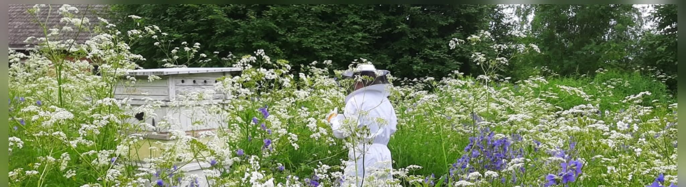
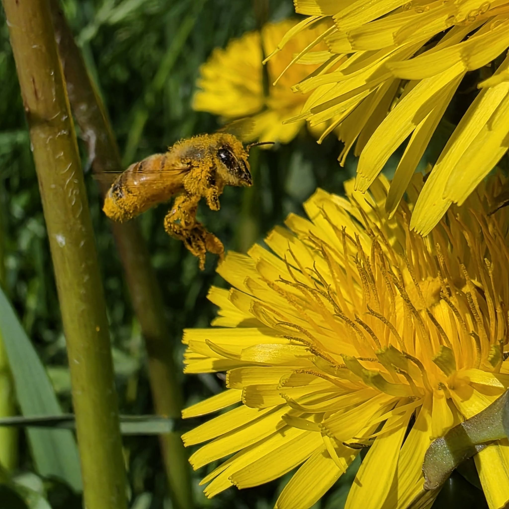

Kuva tulossaJalasjärven Keskikylä · Kurikka
Hunajaa, jota tämä tila on tehnyt jo sata vuotta
Latva-Mantilan hunajatilalla mehiläiset kiertävät Jalasjärven Keskikylän pellot ja niityt kukasta kukkaan, ja tulos on täyteläistä, aitoa monikukkahunajaa suoraan tilalta.

Kuva tulossaTilamme
Elämää Latva-Mantilan hunajatilalla
Jalasjärven Keskikylässä, Kurikassa, Janne ja Katja Latva-Mantila jatkavat perheensä lähes satavuotista mehiläistarhausperinnettä. Pesät sijaitsevat ympäröivien peltojen ja niittyjen keskellä, ja mehiläiset saavat kerätä mettä vapaasti läpi kesän, ja tuloksena on täyteläistä, puhdasta monikukkahunajaa.
- Perheen hoitama tila jo useamman sukupolven ajan
- Mehiläiset keräävät mettä ympäröiviltä pelloilta ja niityiltä
- Hunaja myydään suoraan tilalta sopimuksen mukaan

Monikukkahunaja
Yhtä kesää ei ole kahta samanlaista purkkia
Koska mehiläiset saavat valita kukkansa vapaasti, jokaisen kesän sato kertoo omanlaisensa tarinan: väri, maku ja koostumus vaihtelevat sen mukaan, mikä kukkii milloinkin Keskikylän mailla. Hunaja lingotaan ja pakataan tilalla, ilman turhia lisäyksiä.
- Lingottu ja pakattu tilalla
- Ei lisättyjä aineita
- Toimitetaan myös lähialueen kauppoihin


Kiinnostuitko hunajastamme?
Sovi hunajan nouto puhelimitse tai lähetä viesti lomakkeella, niin järjestetään ajankohta.